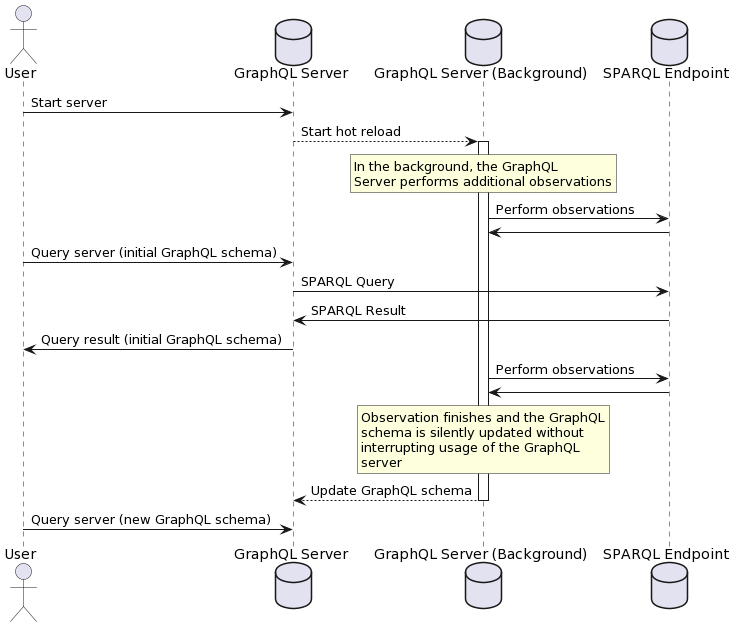

Hot reloading
Hot reloading of the GraphQL schema means updating the running GraphQL server's schema while it is already running. The reason for why you may want to do this is that observing very large datasets can take a very long time, and users may not want to wait for 2 hours before they can even look at the schema or query the endpoint.
Therefore, only the required observations for actually building a schema are performed at startup when using hot reloading. More in-depth observations (i.e. accurate property counts) are then performed in the background, once the server is already running, and the user is able to query it.
The schema is then seamlessly updated, and if the user is using the default playground which is started with SPARQLess, they don't even need to refresh their browser window to see the new schema - it refreshes itself automatically.
In the following diagram, you can see how the GraphQL schema continues to be updated in the background while the user is free to explore and query the endpoint:

How it works
After the server starts, the hotReloadServerSchema function of the
SPARQLess class can be used to run hot reloading. Firstly,
hot reloading must be configured in the Config. It is enabled
by default, and the default configuration looks like this:
hotReload: {
configIterator: (config, _oldModel) => {
// Examine 10 times more properties than in the last iteration.
const newConfig = cloneDeep(config);
if (newConfig.maxPropertyCount) {
newConfig.maxPropertyCount *= 10;
}
return newConfig;
},
shouldIterate: (_config, oldModel, newModel) => {
// Check if the maximum property count changed in the last iteration.
// If not, then there is no point in continuing to count them, since
// we already have everything counted.
const getMaxPropertyCount = (model: ClassDescriptor[]) =>
Math.max(
...model
.flatMap((x) => [...x.attributes, ...x.associations])
.map((x) => x.count),
);
const maxPropertyCountOld = getMaxPropertyCount(oldModel);
const maxPropertyCountNew = getMaxPropertyCount(newModel);
if (maxPropertyCountOld === maxPropertyCountNew) {
return false;
}
return true;
},
},
The hot reload algorithm can be described as the following:
-
Get a new
ObservationConfigfor the next round of observations. This config is obtained using theconfigIteratorfunction from the hot reload configuration. -
Conduct a new round of observations, which are more detailed and likely take more time than the previous round. The default behavior is to count up to 10 times as many property instances than the previous round of observation.
-
Hot-reload the running GraphQL endpoint's schema
-
Poll the
shouldIteratefunction from the hot reload configuration about whether or not the hot reloading should keep iterating. If it returnstrue, the algorithm loops. Iffalse, hot reloading stops for good.